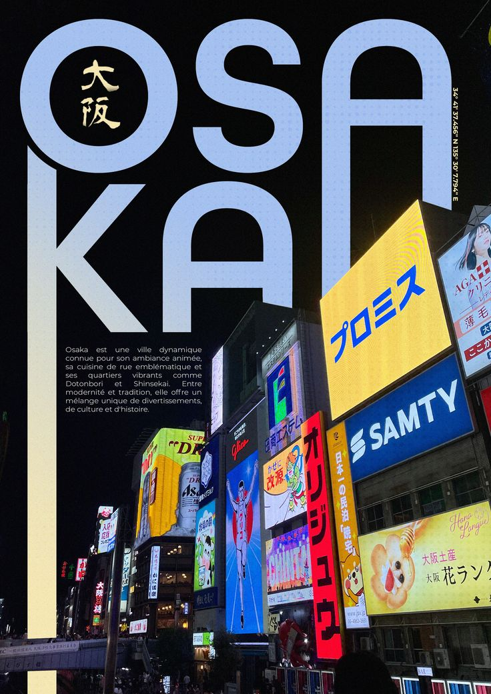
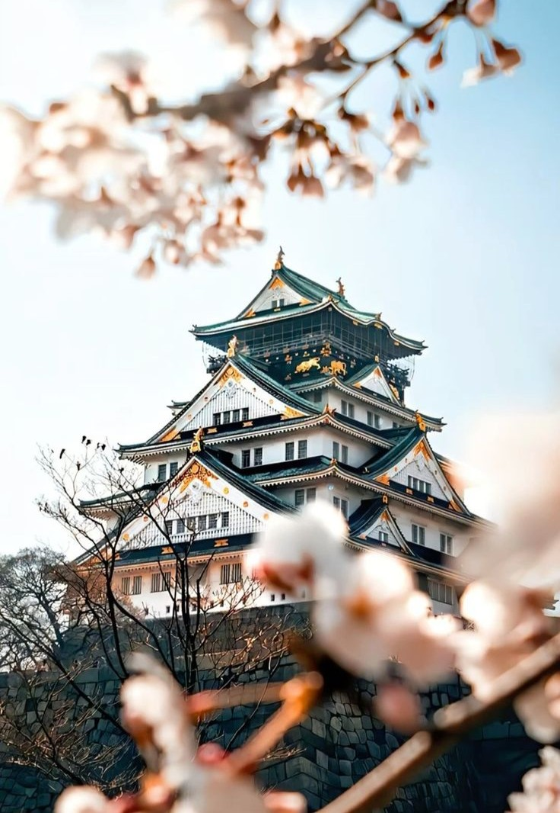

Japão para Visitantes
Um guia introdutório para te guiar em uma jornada de descobertas pelo Japão.
Um guia introdutório para te guiar em uma jornada de descobertas pelo Japão.

Osaka, localizada na região de Kansai, é uma das principais cidades do Japão e um importante centro econômico, comercial e gastronômico do país. Conhecida por seu ambiente mais descontraído e pela hospitalidade de seus habitantes, Osaka apresenta uma atmosfera diferente de cidades como Tóquio e Quioto, sendo frequentemente associada a um estilo de vida mais direto e informal. Historicamente, Osaka desempenhou um papel central no desenvolvimento do comércio japonês, sendo considerada por muito tempo o “centro da cozinha do Japão” devido à sua forte ligação com a distribuição de alimentos. Essa herança ainda é visível no cotidiano da cidade, onde a culinária ocupa um lugar de destaque tanto na cultura quanto na vida social. O ritmo urbano de Osaka é intenso, mas menos rígido em termos de etiqueta quando comparado a outras grandes cidades japonesas. A comunicação tende a ser mais aberta e espontânea, e os moradores costumam demonstrar maior proximidade nas interações sociais. Essa característica torna a cidade particularmente acessível para visitantes estrangeiros. O sistema de transporte público é eficiente e bem integrado, conectando Osaka a outras cidades importantes da região, como Quioto e Kobe. Trens e metrôs permitem deslocamento rápido e prático, facilitando a exploração tanto da cidade quanto de seus arredores. A economia local é diversificada, com forte presença de comércio, indústria e serviços. Grandes áreas comerciais e centros de negócios coexistem com bairros tradicionais e zonas residenciais, criando um ambiente urbano dinâmico. Osaka também é reconhecida por sua relevância no cenário empresarial japonês. O custo de vida, em geral, é considerado ligeiramente mais acessível do que em Tóquio, embora ainda elevado em padrões globais. A cidade oferece opções variadas de hospedagem, alimentação e entretenimento, atendendo a diferentes perfis de visitantes. O clima segue o padrão das quatro estações japonesas, com verões quentes e úmidos e invernos relativamente frios. Assim como em outras regiões do país, primavera e outono são períodos mais agradáveis para visitação. Culturalmente, Osaka possui uma identidade própria bem definida. A cidade é famosa por seu senso de humor, linguagem regional (dialeto Kansai) e forte tradição no entretenimento, incluindo teatro e comédia. Esse aspecto contribui para uma experiência mais leve e interativa em comparação com outras cidades japonesas. A gastronomia é, sem dúvida, um dos maiores destaques. Pratos típicos como takoyaki e okonomiyaki são amplamente consumidos e representam a essência da culinária local, marcada por sabores intensos e preparo acessível. Comer bem é parte central da experiência em Osaka, refletindo o lema informal da cidade: “comer até cair” (kuidaore). De forma geral, Osaka combina desenvolvimento urbano, relevância econômica e uma cultura vibrante, oferecendo ao visitante uma perspectiva mais descontraída e cotidiana do Japão. É uma cidade que valoriza tanto a eficiência quanto a interação humana, proporcionando uma experiência equilibrada entre modernidade e tradição popular.

Osaka apresenta uma ampla variedade de pontos turísticos que refletem seu perfil dinâmico, urbano e voltado ao entretenimento. A cidade combina marcos históricos, áreas modernas e experiências culturais acessíveis, oferecendo opções diversificadas para diferentes perfis de visitantes. Entre os principais pontos históricos, destaca-se o Castelo de Osaka, um dos mais importantes do país, cercado por extensos jardins e estruturas defensivas que remetem ao período feudal japonês. O local também abriga exposições que ajudam a compreender a história da região. Na parte mais moderna da cidade, o bairro de Dotonbori é um dos centros mais conhecidos, famoso por seus letreiros luminosos, vida noturna intensa e grande variedade de restaurantes. A região simboliza o lado mais vibrante e popular de Osaka. Próximo dali, Shinsaibashi concentra ruas comerciais e lojas variadas, sendo um dos principais pontos para compras. Outro destaque é o Universal Studios Japan, um dos parques temáticos mais visitados do país, com atrações baseadas em filmes e franquias conhecidas internacionalmente. É um destino especialmente popular entre famílias e fãs de entretenimento. Para vistas panorâmicas da cidade, o Umeda Sky Building oferece um observatório com arquitetura moderna e visão ampla da região urbana. Ainda na área de Umeda, encontram-se centros comerciais e complexos empresariais que reforçam a importância econômica da cidade. No campo cultural, o Aquário Kaiyukan é um dos maiores aquários do mundo, apresentando diversas espécies marinhas em ambientes cuidadosamente reproduzidos. Já o Templo Shitenno-ji é considerado um dos templos budistas mais antigos do Japão, representando a tradição religiosa da região. A área de Shinsekai oferece uma experiência mais nostálgica, com atmosfera retrô e forte identidade local. Ali também se encontra a Torre Tsutenkaku, um dos símbolos visuais da cidade. Outro ponto relevante é Namba, uma região central que reúne transporte, comércio e entretenimento, funcionando como um dos principais polos urbanos de Osaka. A diversidade de atrações turísticas em Osaka reflete sua identidade multifacetada, unindo história, lazer e modernidade em um ambiente acessível e movimentado. A cidade se destaca por oferecer experiências diretas, interativas e fortemente ligadas ao cotidiano japonês.